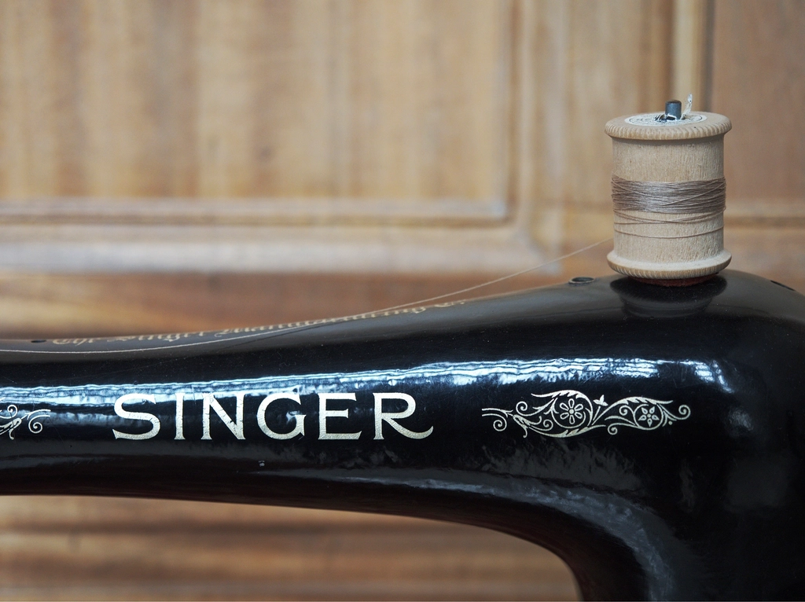
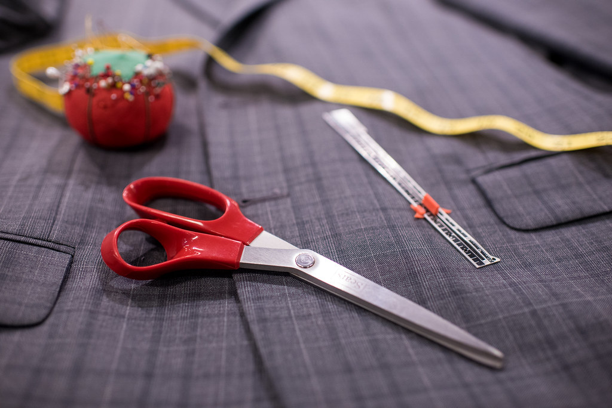
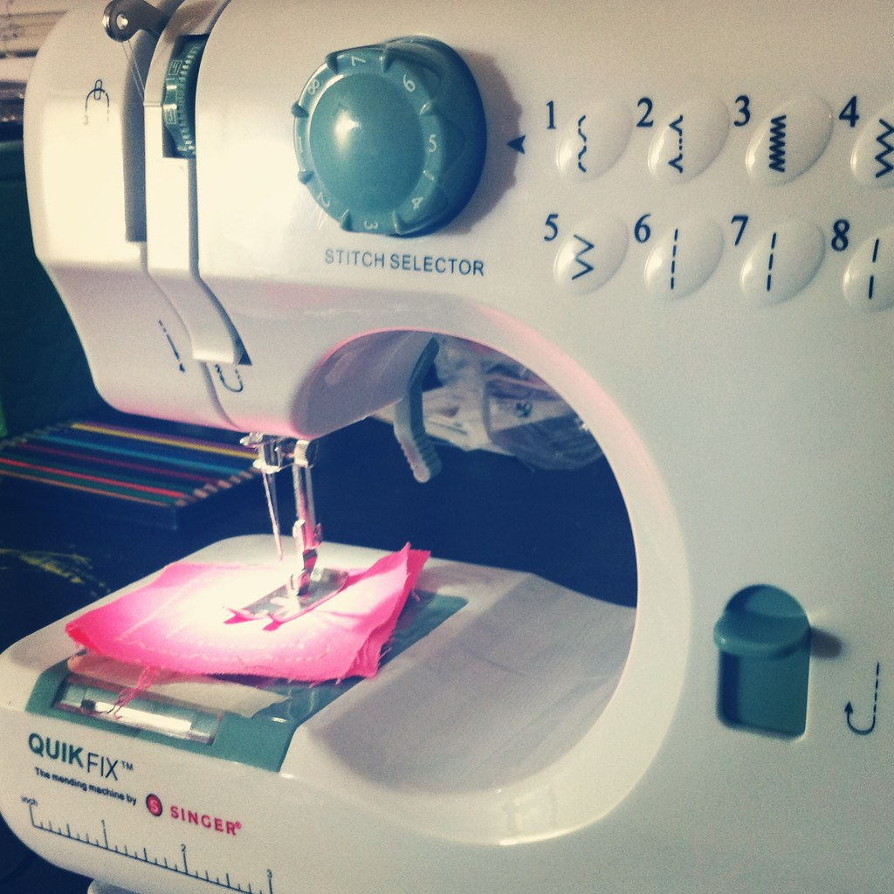
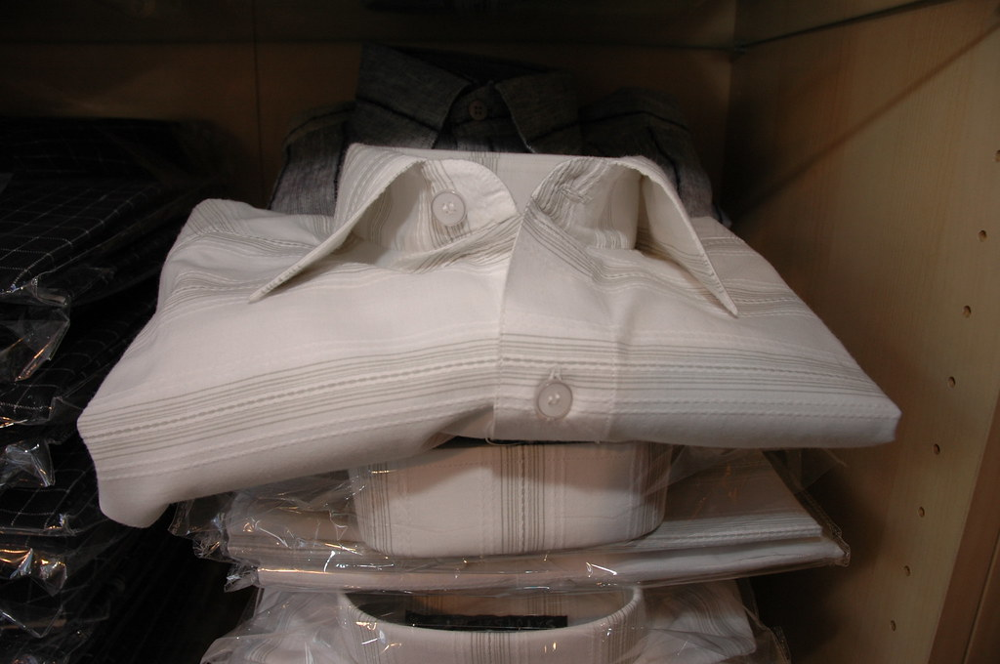

Nosotros
Una marca que se construye prenda a prenda
Esta sección está pensada para contar quiénes somos con datos reales. Reemplazá los textos de ejemplo por tu propia historia apenas la tengas ordenada.

Nuestra historia
De la idea a cada prenda terminada
Todavía estamos completando esta historia con el equipo. Acá va el espacio para contar cómo empezó la marca, qué la distingue y hacia dónde va — sin inventar cifras que no podamos respaldar. Cuando tengas la posta real (año de inicio, hitos, quiénes forman el equipo), la sumamos acá.
Lo que sí podemos afirmar hoy: cada prenda pasa por un proceso cuidado, de selección de tela a control de calidad, antes de llegar a tus manos.
Valores
Lo que no negociamos
Calidad de materiales
Elegimos telas por cómo se sienten y cómo se comportan lavado tras lavado, no solo por precio.
Terminaciones prolijas
Costuras reforzadas y control de calidad en cada etapa de la confección.
Cercanía real
Respondemos consultas nosotros mismos, sin bots ni respuestas automáticas genéricas.
Mejora constante
Ajustamos moldes y procesos con cada temporada según lo que nos cuentan los clientes.
Proceso
De la tela a la prenda terminada

Selección de telas
Revisamos composición, gramaje y comportamiento al lavado antes de aprobar cualquier tela para producción.

Confección
Cada prenda se cose siguiendo una ficha técnica de talles y terminaciones, con controles en distintas etapas.

Control de calidad
Antes de empaquetar, revisamos costuras, medidas y terminaciones prenda por prenda.